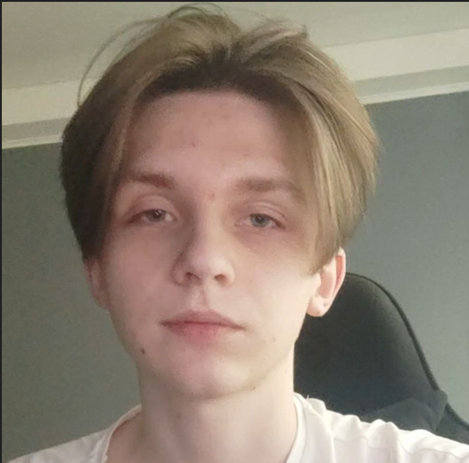

Моя биография
Про мене
Мене звати Олег, мені 20 років, і я навчаюся на інженера програмного забезпечення.
З самого дитинства мені подобалося розбиратися в технологіях, тому я вирішив присвятити себе світу програмування. Вивчаю алгоритми, структури даних, веб-розробку та програмування на різних мовах.
Мої захоплення
- Слухати музику – допомагає розслабитися та зарядитися натхненням.
- Малювати – виражаю свої думки та емоції на папері.
- Грати у відеоігри – розвиваю логіку, реакцію та стратегічне мислення.
Мої цілі
У майбутньому я хочу стати кваліфікованим розробником програмного забезпечення і працювати над цікавими технологічними проектами.
- Чтение
- Путешествия
- Фотография